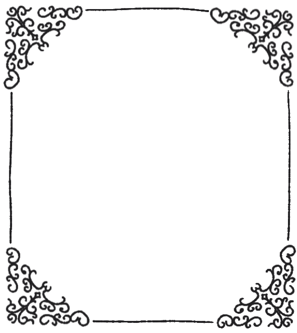
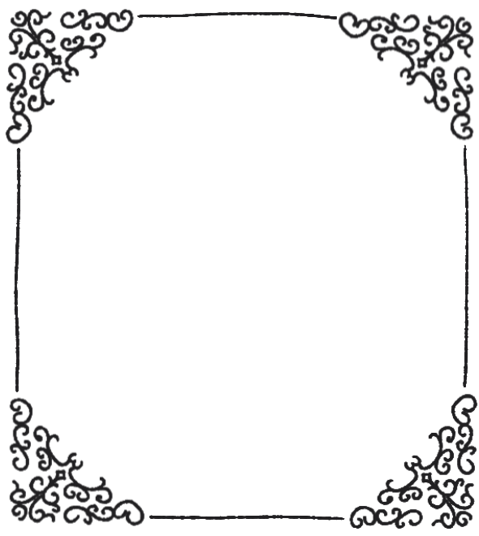

Click to open me!
Tenía muchas ganas de hacerte alguna tontera tierna y dartela cuando viniste a mi casita, pero me faltó tiempo :c así que tuve que improvisar un poquito mientras estoy en la práctica jiji (y tardé un montón pk se me ocurrió dibujar todo en la tablet y "aprender" html en un par de días (y es primera vez que hago esta wea así que si queda rara o fea perdón es que apenas tengo tiempo :c dhjbjhdfbjdf)) quería decirte que te amo muchísimo, me haces inmensamente feliz, y me pone muy contenta finalmente estar con alguien que me quiere y que me entiende, que me hace sentir comprendida, acompañada y apoyada en todo. Eres lo mejor que me pudo haber pasado bb, me haces sentir cómoda y segura, y me gusta que tú te sientas igual, con cada día que pasamos juntitos me haces sentir aún más feliz y aún más enamorada. Me gustas mucho, me gusta como nos molestamos, como nos reímos juntitos, como nos apoyamos en cada tontera que hacemos, como nos entendemos, como nos queremos, y cada cosita que hacemos, por más mínima que sea
Jamás creí encontrar a alguien con quien tuviese una conexión tan especial y tan fuerte, con quien pudiese compartir todas mis tonteras, mis rarezas, y todos mis gustitos medio autistas jsbjsjkdbkjd. En serio te amo mucho, amo todo el tiempo que pasamos juntos, nuestras salidas a fumar un puxito, nuestras llamadas para ver películas o series y nuestras citas. Me encanta que me hagas sentir tan especial e importante para ti. Me haces querer ser tan cursi aunque me ponga ansiosa y no esté acostumbrada shfbjdbfjkbsk eres lo mejor que me ha pasado bb, estoy tan agradecida de estar contigo, de que me hayas elegido a mí, de que me quieras tanto, de que me hagas sentir tan feliz y tan amada. Eres lo mejor que me ha pasado en la vida, y estoy tan feliz de que seas mi pololo, mi compañero, mi amigo, mi amor, mi todo. Te amo mucho, muchísimo, y espero que te guste esta tontera que hice para ti, y que te haga sentir tan feliz como tú me haces sentir a mí.
Te amo bb,
K